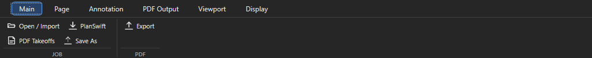
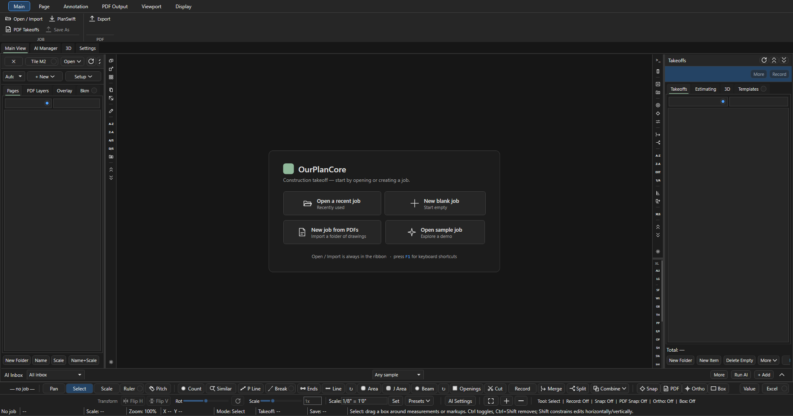
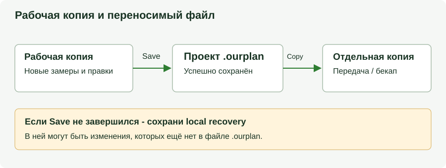
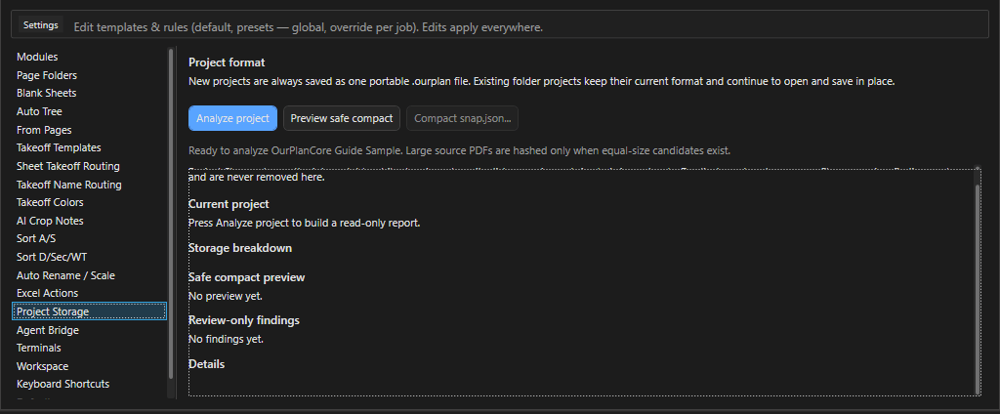

Проекты и сохранение¶
Здесь: стартовый экран, как создать или открыть проект, добавить в него PDF или другой проект, что такое файл .ourplan, как работает автосохранение, что делать, если проект не сохранился или уже открыт другим окном, и где проект занимает место. Нужно на приёме работы, при ревизии и перед передачей проекта.
Коротко
Проект - один файл .ourplan. Копировать и передавать его можно только после Save: Saved hh:mm:ss в строке статуса. Старые проекты-папки сохраняют папочный формат: для них копируется вся папка.

Main > Open / Import. Ctrl+O открывает его же.Меню Open / Import: справка¶
| Пункт меню | Что делает |
|---|---|
Open project... |
окно выбора проекта: слева папки с работами (SOURCES, + Add folder), фильтр по имени, список с датой; внизу Open, PDF project, Blank project, ссылки Sample, Open project file... для .ourplan вне папок, Manage folders...; кнопка Remove folder убирает выбранную папку из списка SOURCES, файлы на диске остаются |
Blank project - start empty |
имя, место для .ourplan; листы добавляются потом через Page > Add Pages или Blank Sheet |
New project from a folder of PDFs... |
папка с PDF (с подпапками), имя проекта, файл .ourplan; листы попадают в Pages/00. imported |
Import PDF Takeoffs... |
PDF с чужими замерами-аннотациями, для старых работ (импорт) |
Sample job (demo to explore) |
демо-проект без клиентских данных (экскурсия по демо) |
Import into the current job > ... |
добавить PDF, папку PDF, другой проект OurPlanCore или проект PlanSwift в открытый проект (ниже) |
Undo Last Page Sort, Undo Last Page Operation |
откат последней сортировки или операции с листами (импорт, перенос) |
Project Data Recovery... |
восстановление защищённых файлов проекта (если пропало) |
Manage job folders... |
добавить или выбрать папку, где лежат работы |
Ctrl+Shift+O открывает список недавних проектов. Проект из приёма приходит уже с именами листов, папками и точками W/F/S/U, поэтому новичку чаще всего нужен только Open project....
В палитре команд (Ctrl+Shift+P) те же пункты называются короче: Open / Import, Open Project File, Open Recent Job, Open Jobs Folder (выбрать папку с работами, она добавится в SOURCES, и открыть список её проектов), New PDF Job (проект из папки PDF), Blank Job, Create Sample Job. Команда Show Main View возвращает к листу из Settings или Sheet Manager, как щелчок по вкладке Main View.
Стартовый экран¶

Open / Import на ленте Main работает и здесь.| Плитка | Что делает |
|---|---|
| Open a recent job / Recently used | список недавних проектов, как Ctrl+Shift+O |
| New blank job / Start empty | пустой проект: имя и место для .ourplan, листы добавляются потом |
| New job from PDFs / Import a folder of drawings | проект из папки PDF (шаги) |
| Open sample job / Explore a demo | создаёт и открывает демо-проект (экскурсия по демо) |
Как открыть проект¶
Зачем: продолжить работу над проектом из папки работ или по файлу.
- Нажмите
Ctrl+Oили Main > Open / Import > Open project... (на стартовом экране - плитка Open a recent job). - Выберите слева папку-источник, при необходимости впишите часть имени в фильтр.
- Щёлкните проект в списке и нажмите Open. Файл вне папок работ открывается ссылкой Open project file....
Результат: имя проекта в заголовке окна и статусе, в Pages раскрываются папки листов, в статусе Save: Saved.
Как создать проект из PDF¶
Зачем: новая работа из папки чертежей клиента. Нужно: папка с PDF-листами (подпапки допустимы).
- Нажмите Main > Open / Import > New project from a folder of PDFs... и выберите папку с чертежами.
- Впишите имя проекта в формате
<номер>. <имя>(номер в начале нужен кнопкеIn Progressи конвейеру) и место для файла.ourplan. - Оставьте в окне Import PDF Options включённой галку растра (ниже) и подтвердите.
- Дождитесь, пока листы лягут в
Pages/00. imported.
Результат: проект открыт, листы в 00. imported с именами Page N или прочитанными из штампа. Дальше Name+Scale и раскладка по папкам: Листы.
Как добавить PDF или проект в открытый проект¶
Зачем: новый комплект при ревизии, пропущенные листы, корпуса из разных проектов. Нужно: нужный проект открыт (имя в заголовке окна): импорт идёт в него.
| Маршрут | Что добавляется | Куда |
|---|---|---|
Import into the current job > PDF file(s)... или Page > Add Pages |
один или несколько PDF, с подтверждением имён листов | Pages/00. imported |
Import into the current job > Folder of PDFs... |
все PDF из папки и подпапок без вопросов по каждому | Pages/00. imported |
Import into the current job > OurPlanCore project... |
другой проект (.ourplan или папка с Data.xml, Pages, Takeoffs) |
отдельные ветки в Pages и Takeoffs (шаги) |
Import into the current job > PlanSwift project..., Main > PDF Takeoffs |
старые работы: проект PlanSwift, замеры из аннотаций PDF (импорт) | группы 01. planswift, from pdf |
Page > Blank Sheet |
пустой лист заданного размера (диалог с пресетами) | выбранная папка Pages |
Как подтянуть другой проект OurPlanCore¶
- Нажмите Main > Open / Import > Import into the current job > OurPlanCore project...: откроется окно Import OurPlanCore into Current Job, в строке
Destinationимя открытого проекта. - Выберите Choose .ourplan file... или Choose project folder... (папка с
Data.xml,Pages,Takeoffs). - Прочитайте в диалоге число листов, позиций и замеров и впишите имя новых веток в поле Folder name in Pages and Takeoffs (например
REV 2). - Нажмите Import.
Результат: всё добавлено отдельными папками в Pages и Takeoffs, существующее и настройки проекта не тронуты; повторный импорт даёт ещё одну ветку. Ссылки кропов на листы другого проекта при импорте не переназначаются. Откат любого импорта: Open / Import > Undo Last Page Operation.
Файл .ourplan и рабочая папка¶
- Проект хранится одним файлом
.ourplan. При открытии программа распаковывает его в рабочую копию и работает с ней;Saveсобирает файл обратно. - Имя проекта видно в заголовке окна, в статусе и в списке недавних. Если файл переименовали в проводнике, показывается новое имя файла; внутрь пакета ничего не пишется.
Save As...(Ctrl+Shift+S, кнопкаSave Asна ленте Main или менюExportв Takeoffs) создаёт новый.ourplanв выбранном месте и сохраняет формат открытого проекта. Расширение и формат руками не менять.- Передача на другой компьютер: скопировать успешно сохранённый
.ourplan. Через общий Workspace проект открывается без копирования: Workspace.
Автосохранение и статус Save¶

.ourplan обновляется отдельным шагом. Копировать можно только файл после успешного Save.Сохранение идёт в два шага:
- Каждый замер и правка дерева сразу пишутся в рабочую копию.
- Файл
.ourplanпересобирается автоматически через несколько секунд тишины, не реже чем раз в пару минут, и поCtrl+S.
| Статус | Значение |
|---|---|
Save: Saved 14:32:10 |
файл обновлён в это время; можно копировать |
Save: Pending |
есть изменения, ещё не записанные в файл |
Save: Saving... |
идёт запись; не закрывать программу |
Save: Failed - N pending |
запись не удалась; держать программу открытой и нажать Ctrl+S. С 3.0.2 файл, поменявшийся во время записи, ошибкой не считается: программа повторяет сама. Failed остаётся для настоящих ошибок, и после них автосохранение ждёт ручного Ctrl+S |
Save: Protected data - open Project Data Recovery |
повреждён файл метаданных; открыть восстановление |
Как передать или скопировать проект¶
Зачем: копия на другой диск, передача коллеге, точка возврата перед рискованной правкой.
- Нажмите
Ctrl+Sи дождитесьSave: Saved hh:mm:ss. - Скопируйте
.ourplanпод отдельным именем или на другой диск (для старого проекта-папки - всю папку). - Откройте именно копию, проверьте несколько листов, замеры и экспорт.
- Храните прежнюю копию до проверки результата.
Результат: рабочая копия и резерв совпадают. Сообщение про local recovery означает, что данные лежат только в рабочей копии и файл ещё не обновлён. .snapshots внутри проекта хранит снимки метаданных; это не бекап PDF, настроек и программы.
Если проект не сохранился или что-то пропало¶
| Симптом | Что делать |
|---|---|
| Замеров нет на экране | проверить активный лист, видимость позиции (точка у листа в Pages, H), выбранный проект; у старого проекта-папки Setup > Repair page links. Не рисовать заново, пока причина не ясна |
Save: Failed |
не закрывать программу; нажать Ctrl+S и дождаться Save: Saved; если не помогает, Save As... в другое место. Рабочую копию не удалять. Статус сам не сбросится: автосохранение ждёт ручного Ctrl+S |
Save: Protected data |
Open / Import > Project Data Recovery...: выбрать запись, Retry reading после снятия блокировки (сообщение used by another process значит, что файл листа держит другая программа, например синхронизация папки: с 3.0.2 короткую блокировку программа пережидает сама, при долгой хватает Retry reading) или Restore from copy... из известной исправной копии; после восстановления закрыть окно, программа перечитает данные |
Файл .ourplan не открывается |
принять предложение открыть сохранённую local recovery; Project Data Recovery архив не ремонтирует |
Save отказывал после переноса листа между папками |
исправлено в текущей сборке; если повторилось - Решение проблем |
| Нет места при открытии | программе нужно место под рабочую копию; освободить диск вне папок проектов и recovery |
| Количество неожиданно изменилось | проверить масштаб листа, единицы, активный лист и принадлежность позиции; автомасштаб требует проверки по известному размеру |
Если проект уже открыт другим окном¶
Пока проект открыт, программа держит на нём отметку владельца и обновляет её каждые 5 секунд. Второе окно OurPlanCore или второй компьютер с тем же файлом получает при открытии окно Job Is Already Open: путь проекта, Owner, Machine, Process, Started, Heartbeat, Version.
Как открыть проект, который держит другое окно¶
Зачем: посмотреть или забрать проект, не испортив его двумя одновременными записями.
- Прочитайте
MachineиHeartbeat. Если владелец - другое ваше окно программы, сохраните и закройте его, затем нажмите Retry. - Нужно только посмотреть: нажмите Open Read-Only. В заголовке окна появится
[READ-ONLY], сохранения и правки отключены. - Владелец упал или завис, отметка не обновлялась 30 секунд: значок сменится на
STALE LEASEи станет доступна кнопка Take Over. Нажмите её и подтвердите в окнеConfirm Risky Take Over. - Сомневаетесь - нажмите Cancel, открытие отменится.
Результат: проект открыт для записи (после Retry или Take Over) или только для чтения.
Take Over при живом владельце
Если другое окно на самом деле работает, два окна пишут в один проект и могут его испортить. Перехватывайте только когда точно знаете, что владелец закрыт или завис.
Растр при импорте и Sheet Manager¶
В Import PDF Options галка Build readable raster cache and strict black-line snap index готовит растр листов и индекс чёрных линий для привязки PDF Snap. Это дольше и занимает место, зато листы открываются быстрее, а Ctrl+F3 цепляется к линиям. Выбор запоминается. Для уже импортированных листов растр готовится во вкладке Sheet Manager (модуль): выделить листы, Prepare, затем First On (шаги). Сканы без текстового слоя иначе не именуются и не масштабируются автоматически.
В Sheet Manager кнопка Options... открывает формат растра: Auto (по умолчанию, WebP где можно), WebP или PNG для трудных PDF, похожих на скан. Набор кнопок DPI правится в Settings > Defaults, раздел Sheet Manager raster DPI presets (Settings).
Project Storage¶

Как проверить, где проект занимает место¶
Зачем: понять, почему .ourplan раздулся, и безопасно ужать то, что можно.
Нужно: проект открыт; для сжатия - не только для чтения.
- Откройте Settings > Project Storage и нажмите Analyze project.
- Прочитайте разделы отчёта (таблица ниже). Файлы при анализе не меняются.
- Нажмите Preview safe compact: в разделе
Safe compact previewпоявится, сколько места освободит сжатие. - Если экономия больше нуля, нажмите Compact snap.json... и подтвердите. Сжимаются только пробелы форматирования в индексах привязки
snap.json; PDF, растр, история восстановления, позиции и замеры не удаляются.
Результат: в статусе Compacted N file(s); saved ...; для свежего отчёта снова нажмите Analyze project.
| Раздел | Что показывает |
|---|---|
Project format |
новые проекты всегда один переносимый файл .ourplan; старые проекты-папки остаются папками и сохраняются на месте |
Current project |
имя, число файлов и общий размер |
Storage breakdown |
размер по группам: данные проекта, растр листов (пересобирается), история восстановления, дубли исходных PDF, PDF без ссылки с листа, PDF для проверки, прочее |
Safe compact preview |
сколько snap.json можно сжать и сколько это сэкономит |
Review-only findings |
дубли исходных PDF, PDF без ссылки с листа, внешние зависимости листов. Только для сведения: здесь ничего не удаляется, такие файлы могут понадобиться при восстановлении |
Details |
первые строки находок: DUP (дубль), REVIEW (проверить), WARN (предупреждение) |
Это не очистка recovery и кешей на компьютере. Неиспользуемые варианты растра выделенных листов убирает Clean в Sheet Manager, всех листов при закрытии программы - галка Clean unused raster cache on close в Settings > Defaults (активный растр и индекс привязки остаются).
Что внутри проекта (для продвинутых)
Data.xml карточка проекта
sources/ исходные PDF
Pages/.../<лист>/
Data.xml, source.json имя, источник, масштаб
source_pdf.json метаданные для Name/Scale
takeoff_routing.json точка W/F/S/U листа
annotations.json разметка, маски Hide, кропы
layers.json, raster/ слои PDF, растр
Takeoffs/.../<позиция>/
Data.xml, measurements.json
AI_Context/settings/ настройки этого проекта (маршрутизация, клавиши, модули)
AI_Context/project.md заметки проекта для ИИ: наблюдения и ответы AI
AI_Context/*-trash корзины отката Merge и агента
3D_Context/walls_model.json модель 3D
bookmarks.json, import_reports/
Data.xml. Файлы проекта во время работы программы руками не править. Исключение - AI_Context/project.md, журнал наблюдений и ответов AI по проекту: при модуле AI его открывает в Блокноте ПКМ по листу Open Project Context. Программа только дописывает в конец, свои заметки там сохраняются.